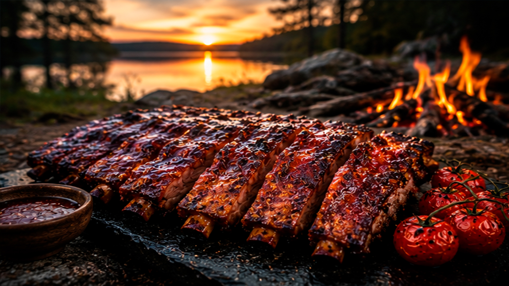

There are few outdoor meals more satisfying than slow-cooked pork ribs beside a quiet forest lake. Combined with the rich flavor of wild berry glaze and cooked on a naturally heated stone over an open campfire, this simple camping recipe becomes an unforgettable wilderness experience.
In this solo camping adventure, I escape deep into nature to enjoy peaceful surroundings, prepare a traditional campfire, and cook one of my favorite outdoor meals while recording only authentic forest ASMR sounds.
Far away from busy roads and crowded campsites, a hidden forest lake offers the perfect place to relax. The only sounds are birds singing, the gentle breeze through the pine trees and the crackling fire.
Camping alone allows you to slow down, appreciate nature and enjoy every step of preparing a meal outdoors.
Instead of using a traditional grill, the ribs are cooked directly on a large flat stone heated by the campfire. The stone stores heat evenly, creating a perfect surface for slow cooking while adding a unique rustic character to the food.
This ancient cooking technique has been used for centuries and remains one of the most enjoyable ways to prepare meat in the wilderness.
The highlight of this recipe is a sweet and tangy wild berry glaze. As the sauce slowly caramelizes over the hot stone, it creates a rich golden crust while keeping the ribs juicy and tender inside.
The combination of smoky campfire flavor and fresh berry sweetness makes every bite unforgettable.

There is no talking throughout the video. Instead, viewers can fully immerse themselves in natural ASMR sounds: crackling firewood, sizzling meat, birds singing and the peaceful atmosphere of the forest.
These relaxing sounds make the video perfect for stress relief, meditation, studying or simply enjoying the calming feeling of nature.
Outdoor cooking doesn't require expensive equipment. A campfire, a natural stone, fresh ingredients and patience are often enough to create incredible meals in the wilderness.
Cooking over an open fire becomes part of the adventure itself, turning an ordinary meal into a memorable camping experience.
If you enjoy solo camping, bushcraft skills, relaxing nature sounds and delicious campfire recipes, this video offers the perfect escape into the wilderness. Sit back, relax and enjoy the peaceful rhythm of outdoor life.